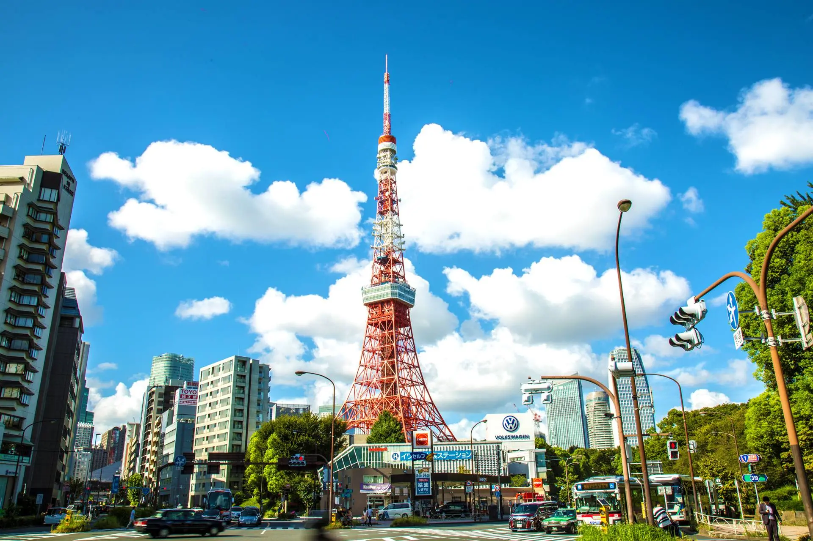
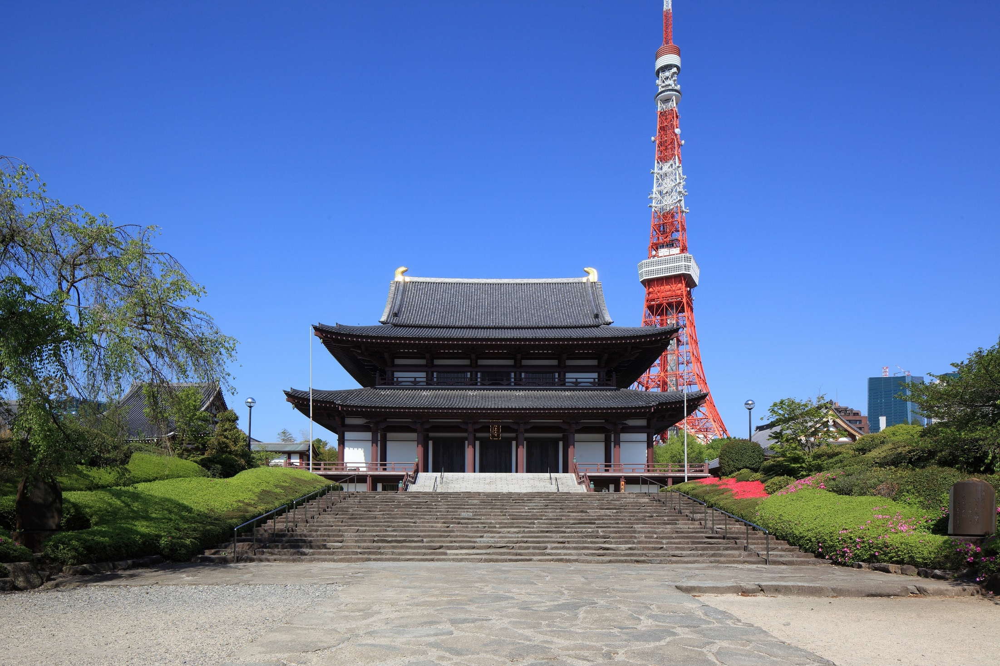

TOKYO TRIP DAY 6
地標與經典
上野・港區・日本橋 | 從演化奇蹟到江戶繁華
Spot 01
國立科學博物館：生命的演化史詩
行程從上野公園展開。這裡是日本唯一的綜合科學博物館，匯集了從地球誕生到現代科技的驚人收藏。
地球館演化奇蹟
重點在於地下層的恐龍展示區，巨大的暴龍與三角龍骨骼化石立體交錯，重現中生代的霸主氣勢。
日本館建築美學
建築本身即為重要文化財。展示了日本列島的自然變遷、忠犬八公的標本，以及古代日本人觀測自然的智慧。
日比谷線 上野 神谷町站
Spot 02

東京鐵塔：紅與白的優雅靈魂
不論造訪過東京多少次，紅白相間的鐵塔依然是這座城市最具溫度的地標。它不僅是一座廣播塔，更是昭和時代繁榮至今的精神象徵。
都會景觀視野
登上 Main Deck，港區繁華的高樓群一覽無遺。透明地墊挑戰膽量，俯瞰 145 公尺下的車水馬龍。
FootTown 購物
塔下的商業設施內含限定伴手禮店，是收集東京鐵塔紀念小物與休息的好地方。
Spot 03

增上寺：德川幕府與現代地標的交錯
德川將軍家的菩提寺。這裡最著名的便是江戶時代的大殿與後方鮮豔東京鐵塔同框的畫面。
千體子育地藏
境內排列整齊的地藏菩薩像，披著紅帽、手持風車，為肅穆的寺院增添了一絲溫柔色彩。
將軍家靈廟
安葬了六位德川幕府將軍，靜靜訴說著江戶時代最後的輝煌。
三田線 御成門 大手町站
Spot 04
東京車站：紅磚下的時空拼圖
由辰野金吾設計的紅磚站舍，修復後展現了明治時代的浪漫風華。
南北圓頂浮雕
入口大廳穹頂內刻有精美的生肖與老鷹浮雕，展現了西洋建築技術與日式美學的融合。
丸之內建築群
對面的丸之內大樓廣場，提供視野開闊的攝影點，黃昏時分燈光亮起，站舍如同寶石般閃耀。
Spot 05

日本橋三越本店：傳承百年的奢華殿堂
日本第一家百貨公司。三越本店不僅提供頂級購物，更是一座「活的建築博物館」。
中央大廳天女像
高達四層樓、色彩斑斕的檜木雕刻「天女像」，是造訪此處必看的藝術震撼。
青銅獅子守護神
正門的青銅獅子自 1914 年起便守護著此處。傳說秘密觸摸獅子的後腿會帶來好運。
🌙 歸途平安
三越前
銀座線
御徒町
返回飯店休息，結束這場地標與古典交織的旅程。
今日總結：
經歷了知性的科學探索、與紅白鐵道塔的邂逅，最後在日本橋感受百年商道的精髓。這份記憶將隨著溫泉的熱氣，深深烙印在腦海中。
經歷了知性的科學探索、與紅白鐵道塔的邂逅，最後在日本橋感受百年商道的精髓。這份記憶將隨著溫泉的熱氣，深深烙印在腦海中。